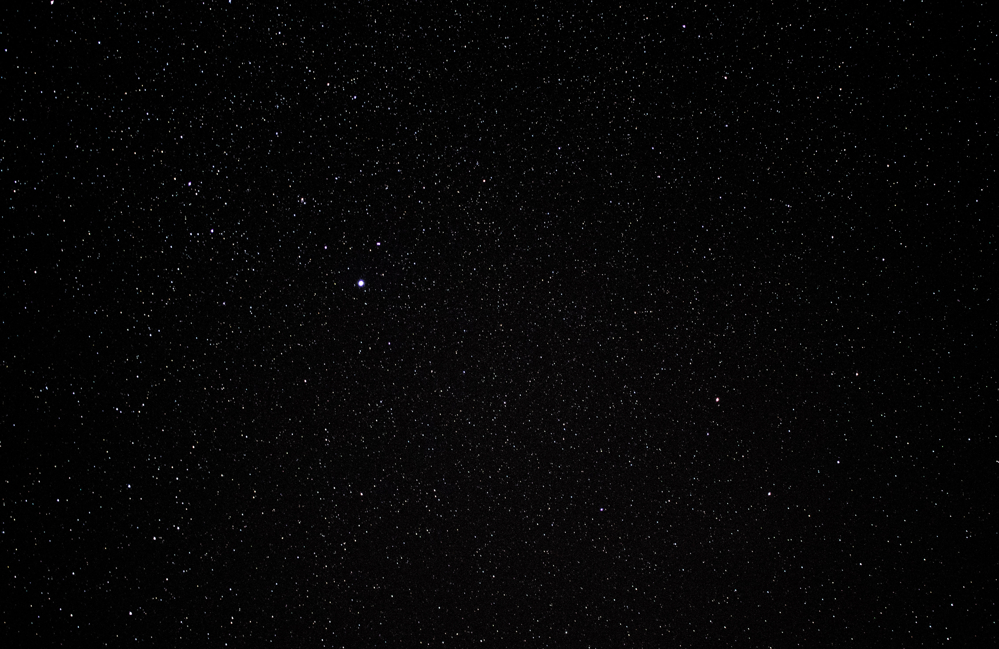

- Walburga Black
- Orion Black
- Sirius Black
- Regulus Arcturus Black
- Druella Black
- Cygnus Black
- Bellatrix Black
- Andromeda Black
- Narcissa Black
Walburga Black

Walburga Black (1925 – 1985) was a British pure-blood Dark witch, the eldest daughter of Pollux Black and Irma Crabbe, the older sister of Alphard and Cygnus, the wife and second cousin of Orion Black, and the mother of Sirius Black III and Regulus Black II. She was also a member of the noble House of Black, an old wizarding family and one of the Sacred Twenty-Eight.
Walburga lived in Grimmauld Place starting at an unknown point in her life, presumably after she married her second cousin Orion. She died in 1985, but her portrait still remains at 12 Grimmauld Place. Walburga's portrait makes anyone not in the pure-blood elite quite uncomfortable in her home, by constantly shouting insults and epithets at them.